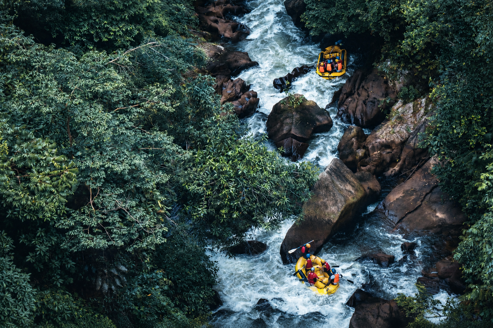
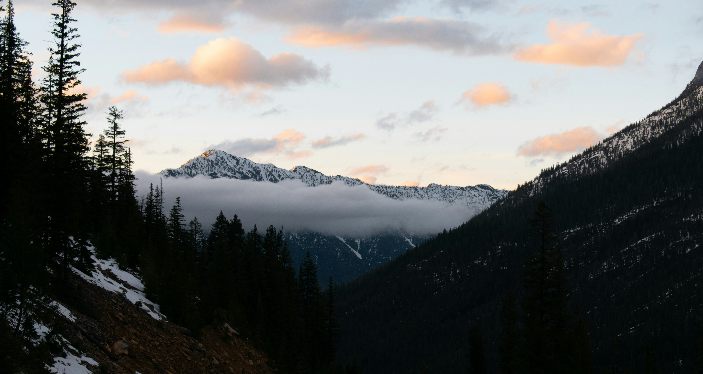

Wild Water Rafting

Explore my White Water Rafting website, one of the projects for my web development class.
View Project

Explore my White Water Rafting website, one of the projects for my web development class.
View ProjectTake a look at the different coding exercises and projects I have completed throughout this course.
View ProjectsMy goal is to continue learning and growing as a web designer while creating websites that are both visually appealing and easy to use. I enjoy combining creativity with technology and finding new ways to bring my ideas to life.
Contact Me